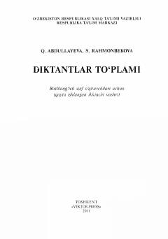

DTBoshlang'ich sinf o'qituvchilari uchun diktantlar to'plami va ularni o'tkazish metodikasi.
Ushbu qo'llanma boshlang'ich sinf o'qituvchilari uchun mo'ljallangan bo'lib, o'quvchilarning savodxonligini oshirish va imlo ko'nikmalarini rivojlantirishga xizmat qiladi. Kitobda diktantlarning turli turlari, ularni o'tkazish metodikasi hamda 1-4 sinf ona tili dasturiga mos matnlar jamlangan.